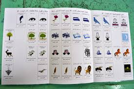
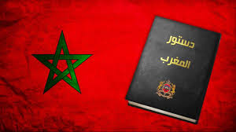
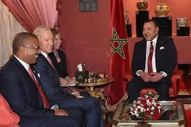

التعددية الحزبية في المغرب
يتميز المغرب بتجربة ديمقراطية تقوم على التعددية الحزبية. ورغم وجود أكثر من ثلاثين حزباً، إلا أن المشاركة الفعلية في الحياة السياسية تظل محصورة بين أحزاب كبرى تملك قاعدة انتخابية واسعة.
هذه التعددية تمنح المشهد السياسي حيوية، لكنها في الوقت نفسه تطرح تحديات مرتبطة بضعف التنسيق والتحالفات، ما قد يؤثر على الاستقرار الحكومي وفعالية المؤسسات.
الإصلاحات الدستورية ومسار الديمقراطية
منذ دستور 2011، خطا المغرب خطوات مهمة في مسار ترسيخ الديمقراطية وتعزيز دور المؤسسات. فقد تم توسيع صلاحيات الحكومة والبرلمان، وتعزيز مكانة الحقوق والحريات الفردية والجماعية.
غير أن التحدي يكمن في تفعيل هذه المقتضيات على أرض الواقع وضمان التوازن بين السلطات، بما يعزز الثقة بين المواطن والدولة.
السياسة الخارجية المغربية
تميزت السياسة الخارجية للمغرب خلال العقد الأخير بالانفتاح على إفريقيا وتعزيز العلاقات مع القوى الكبرى. هذا التوجه مكّن المملكة من لعب دور محوري في القضايا الإقليمية والدولية.
كما أن قضية الصحراء المغربية تظل محوراً أساسياً في الدبلوماسية، حيث تبذل المملكة جهوداً دبلوماسية متواصلة لحشد الدعم الدولي لمبادرة الحكم الذاتي كحل نهائي للنزاع.